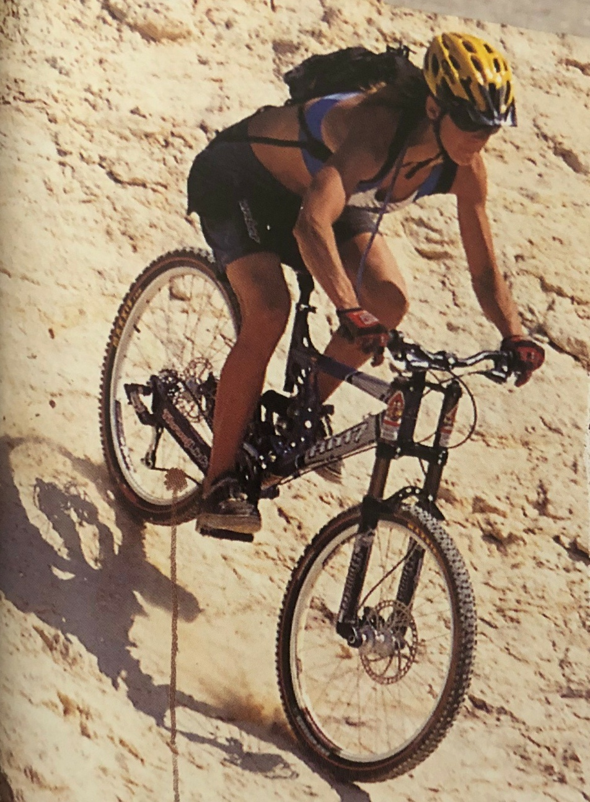
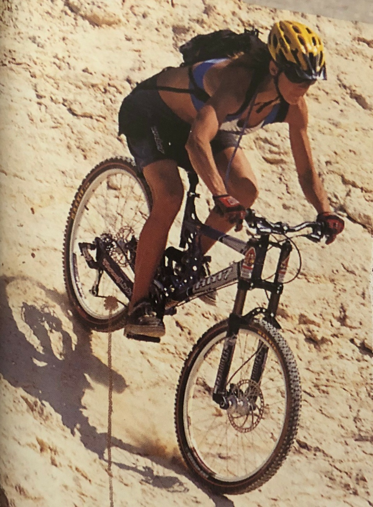

Fancy the look of the mountain trails at Fort William or Glentress? Want to follow in the footsteps of Jenny Copnall, Liam Killeen, Oli Beckingsale and Annie Last? What you need is one of our exciting Mountain Bikes with extra strong suspension forks, Shimano Alivio shifters and derailleurs with Tektro hydraulic disc brakes and all for less than £600!
 
